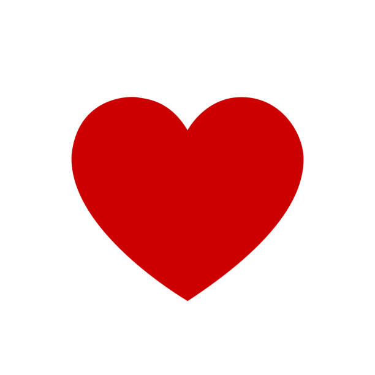

de cauã para mariane

não dá mais para guardar isso só para mim, Você não sai da minha cabeça.O que eu sinto por você é algo muito leve, Eu simplesmente amo o seu jeito, Sabe aquele sorriso bobo que a gente dá no meio do dia do nada? É o que acontece comigo quando lembro de você, você se tornou alguém essencial para mim, Não quero mais esconder que sinto algo que vai muito além de uma amizade
não foi o davi que criou o site dessa vez!!!!